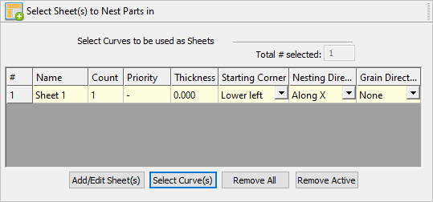
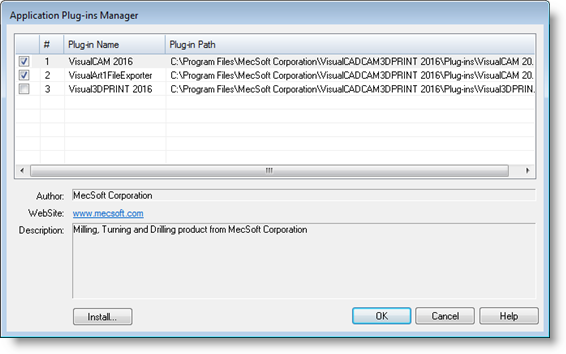
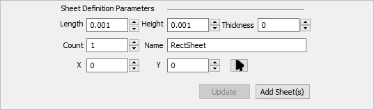
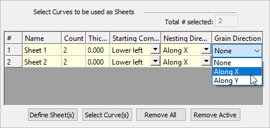

This tab allows the definition of sheet(s) to nest parts. There are 4 buttons on this tab that provides control for the selection of geometry as sheets and for defining sheets from parameters.
Once the sheet(s) are selected, you can specify sheet Count and Grain Direction for each sheet. For True Shape Nesting, you can also specify Starting Corner and Nesting Direction.
 Nesting Browser - Select Part(s) to Nest (TrueShape Nesting) |
 Select Sheet(s) to Nest Parts in tab, Rectangular Nesting Total # Selected This reports the total number of sheets that are defined in the table (not the count). |
Select this button to display the Sheet Definition Parameters. This allows you to create a sheet by entering specific parameters. Then select the Add Sheet(s) button to add the sheet to the Sheets List. 
|
To select curves to be used as sheets, click the Select Curve(s) button. Select closed curves for sheets and press enter or click the right mouse button to add curves to the selection list. Open profiles are not supported as this may result in incorrect nests. Sheets are only periphery shapes and cannot contain holes or cutouts. True shape nesting will use arbitrary shapes for sheets. Rectangular nesting will fit a rectangle around the curve shape that is selected for sheets and will use the rectangle as the sheet for nesting.
|
Selecting Remove All removes all sheets from the selection list. |
Selecting the Remove Active button removes the highlighted sheet(s) from the selection list. To remove a sheet, select it from the list and click Remove Active. Remove Active for Sheets |
Count defines the number of copies for each sheet. Count is set to 2 or more when parts need to be nested to multiple sheets of same size. By default, this value is set = 1. Count for Sheets In the above example, count for Sheet1 is set = 2. |
This defines the corner of the sheet to start the nesting. The starting corner can be set to Lower left, Lower right, Upper left, or Upper right. Starting corner can be specified for each sheet. Starting Corner (True Shape Nesting) By default Lower Left corner is used as starting corner.
|
This defines the direction along which the sheet gets filled with parts. This could be either set to Along X or Along Y.
|
Rolled metal sheets have a property called grain direction, which affects the strength of the parts cut from that sheet. In order to ensure that a part does not fail/break during the subsequent mechanical operations like bending, it is necessary to cut critical parts, such that they align with the grain direction of the stock sheet material. If Grain Direction is used in Nesting, it must be specified for both the stock sheets and the parts that need to be controlled. Grain Direction can be set to None, Along X, or Along Y. The default Grain Direction is set to None.  Grain Direction for Sheets
|